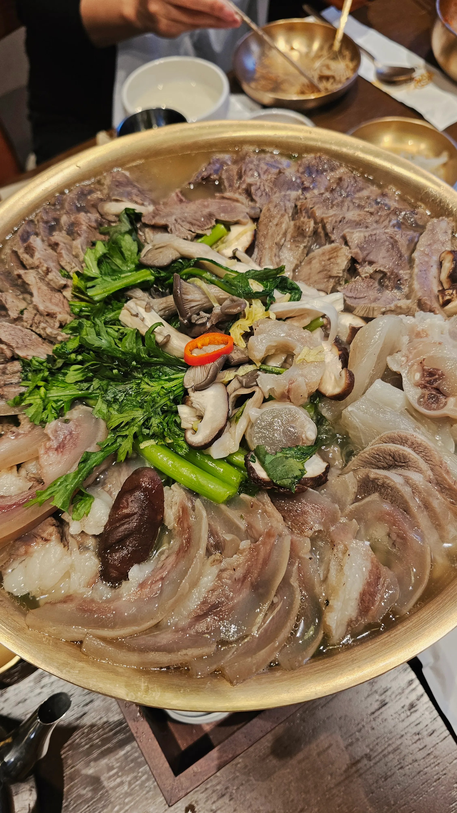
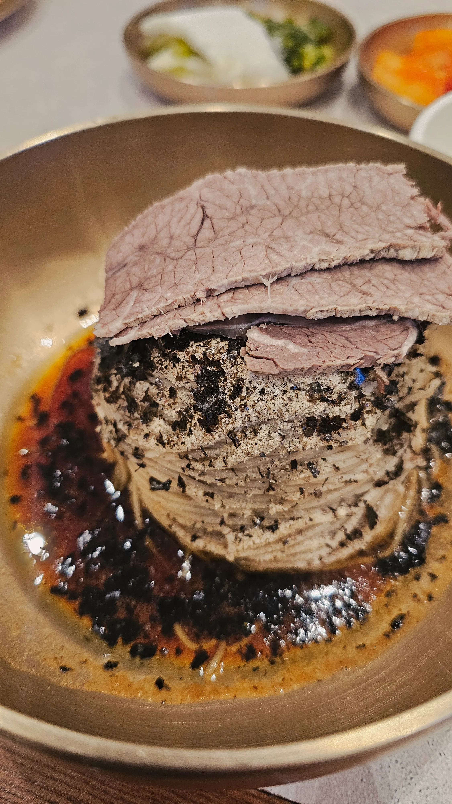
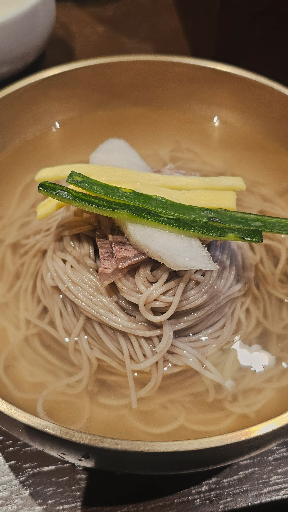
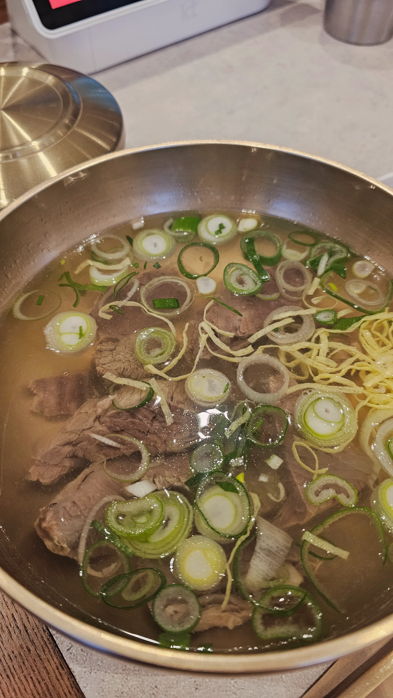
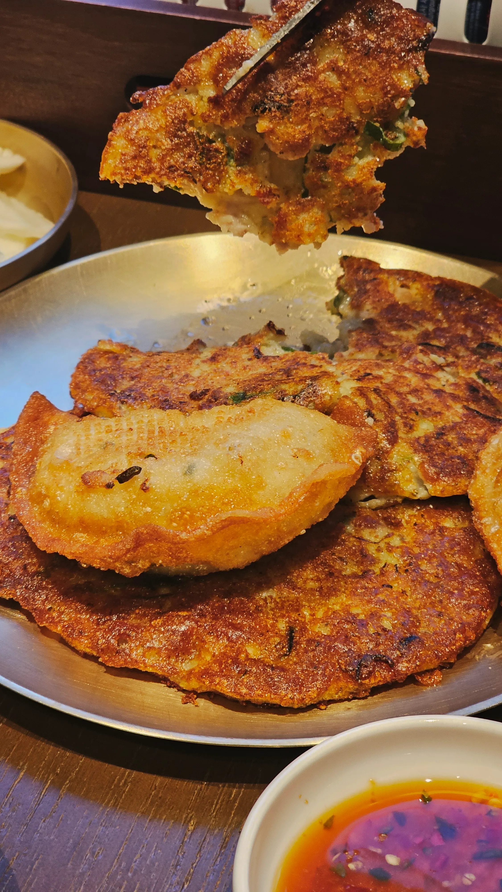
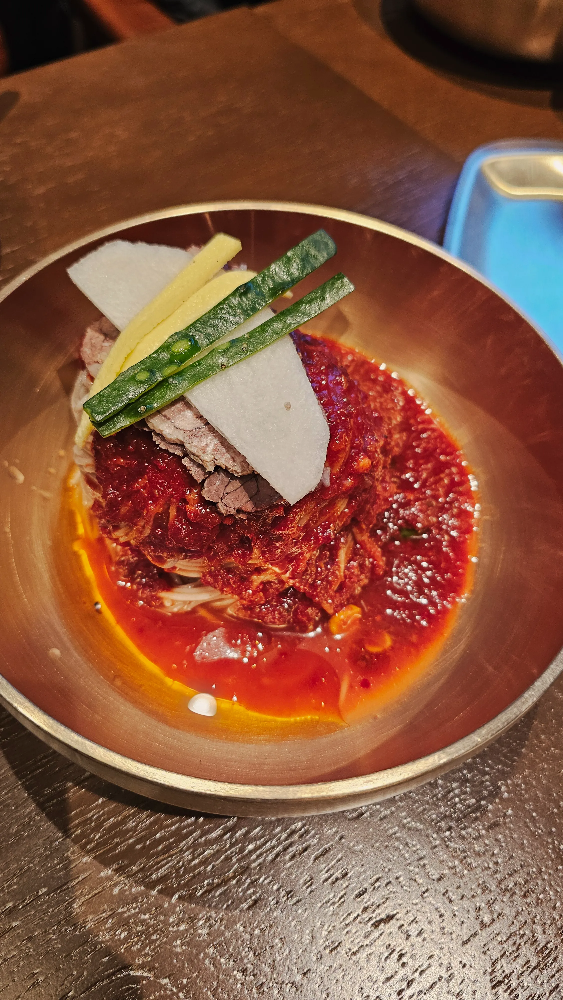
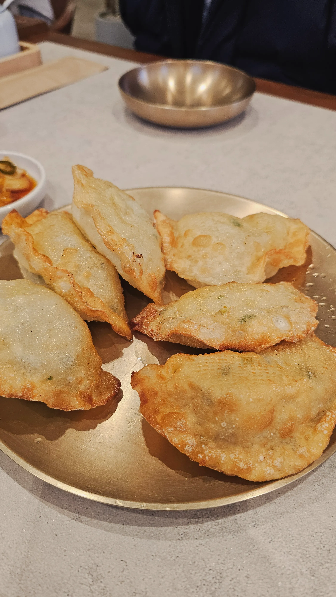

광화문면옥
서울에서 느끼는 평양의 맛, 광화문면옥 다녀왔습니다.

1) 광화문면옥
위치: 서울 종로구 새문안로 92 1층 101호
운영 시간: 11:00 ~ 21:30
광화문 오피시아빌딩 1층에 위치한 광화문면옥은 평양식 음식을 파는 곳입니다. 기존 빌리앤젤 카페가 있던 자리입니다.





2) 좋은 점
깔끔하면서 고기국물향이 느껴지는 평양냉면 뿐만아니라 들기름순면, 비빔냉면, 한우곰탕, 녹두전 등 다른 음식도 많이 팔고 있고
모든 음식을 먹어봤는데 다 기본 이상은 합니다. 특히 들기름순면이 달지 않은 고소한 맛이라 좋았습니다. 아! 여기 만두 맛집입니다.
군만두는 사이드로 꼭 드세요!!
또한 음식점이 넓고 룸도 있어서 근처 직장인들 점심 회식하기도 좋습니다. 실제로도 점심 회식을 많이 합니다.
3) 아쉬운 점
평양냉면과 어복쟁반이 호불호가 갈립니다. 개인적으로 저는 평양냉면 처음 도전이었는데 앞으로는 안먹어봐도 되겠다 생각했습니다. 어복쟁반은 고기가 부드러워서 맛있었는데 스지부분이 호불호가 많이 갈렸었습니다. 그리고 광화문이라서 가격대도 높은 편이 아쉬웠습니다.
4) 이런 사람에게 추천합니다
맛도 괜찮은 곳이라 단품메뉴들은 광화문 평균정도 가격이라 가끔 먹으러 가기에는 좋은 선택이라고 생각합니다.(평양냉면 좋아하는 분도 추천) 어복쟁반이나 만두전골 같은 가격대가 있는 메뉴들은 회식 때 먹으면 좋을 것 같습니다. 회식으로도 점심으로도 괜찮습니다.

5) 결론 한 줄(별점: ⭐️⭐️⭐️⭐️)
가성비가 조금 떨어지는 곳이지만 평양냉면을 좋아하시는 분들은 가봐야 하는 곳이고 직장 점심 회식장소로도 괜찮다고 생각합니다. 저는 들기름순면과 군만두가 맛있어서 별점 4개 드립니다.